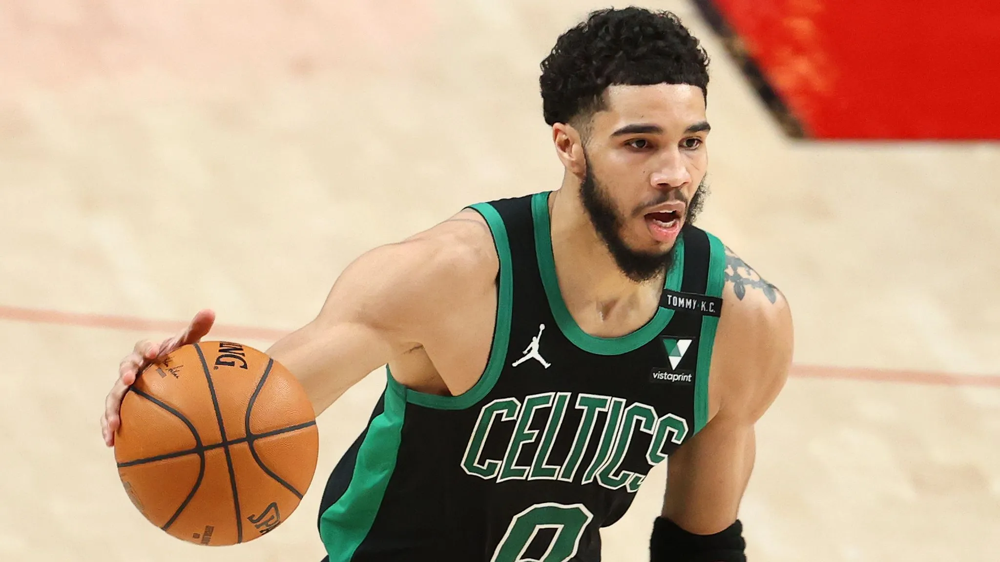

Koszykówka
Gram w koszykówkę juz prawie dwa lata. Dla niektórych mało, dla mnie w sumie też jakoś nie długo, ale bardzo to kocham. W grudniu 2021 obejrzałam pierwszy mecz koszyówki i już wiedziałam, że chce to robić. Mniej więcej pół roku później, może troche mniej, zaczełam trenować kosza w mojej miejscowości z chłopkami. W Mielcu nie ma sekjci damskiej koszykówki.
Trenowanie z chłopakami było okej ale czasem mnie denerwowali ale bardzo miło i pozytywnie ich wspominam. Z chłopakami trenowałam rok. Przechodząc płynnie do dnia dzisiejszego przeprowadzka do Warszawy była dla mnie zadziwiająco łatwa. Pierwsze dni może były specyficzne ale generalnie było dobrze. AZS uniwerytetu warszawskiego Aktualnie gram w u19.
Sezon zaczynamy w tym tygodniu, grając z Sokołowem. Mamy bardzo ładne granatowe stroje. Dziewczyny z drużyny też są okej. Mam najlepszego trenera na świecie. Serio trener jest takim szefem. Nigdy nie miałam lepszego(miałam dwóch). Przekazuje mi tyle wiedzy i jest tak inteligemty koszykarsko, że cieżko to opisać. Jako,że miałam/może nadal mam problem z szybkim myśleniem na boisku dobry trener to podstawa. Trener karze nam strasznie dużo biegać. Bieganie jest okej. Mój idol Mariusz Pudzianowski inspiruje mnie do tego każdego dnia. Wczoraj grałyśmy mecz z AZS umcs Lublin. WYGRAŁYSMY. Generalnie Lublin nie stwarzał wiekszego zagrożenia. Jako, że piszę to tydzień później, wczoraj zaczęłyśmy sezon. Przegrałyśmy z Piasecznem. Strasznie szkoda bo to pierwszy mecz ligowy. Nastepny gramy z La Basket wiec myślę, że damy sobie z nimi rade. Piaseczno ma bardzo ładną hale, aczkolwiek straszny mają parkiet. Buty tam nie mają w ogóle trakcji, ale trzeba sobie jakoś radzić.
Nie długo zaczyna się sezon nba. Mój chłopak, czyli Jayson Tatum, myśle, że w tym roku z bostonem wygra mistzrostwo. W ubiegłym sezonie, niby poszło im nie najgorzej, ale strasznie głupio przegrali z miami. Myślę, że moge mu to wybaczyć. Jayson Tatum(bardzo duży smash) jest fajny. Polecam wam tego zawodnika bardzo serdecznie.
przejdź do strony